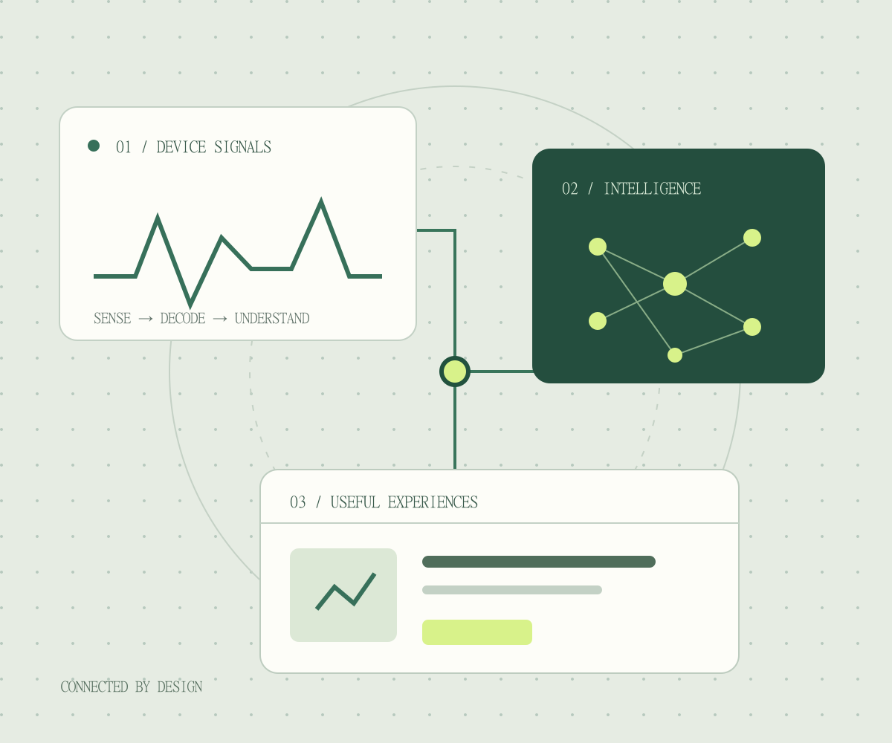
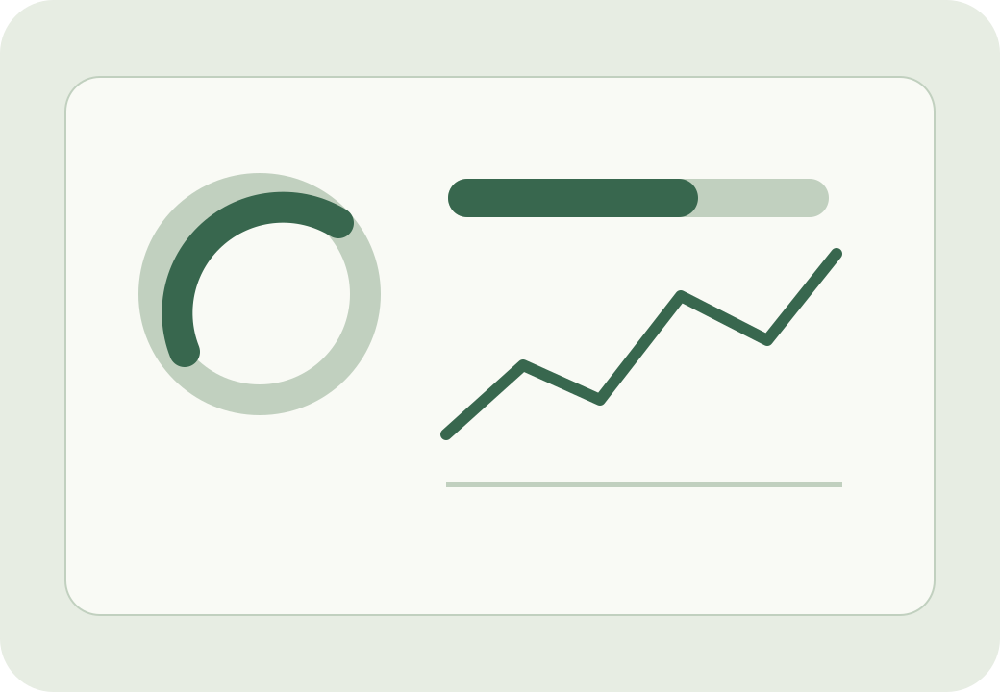
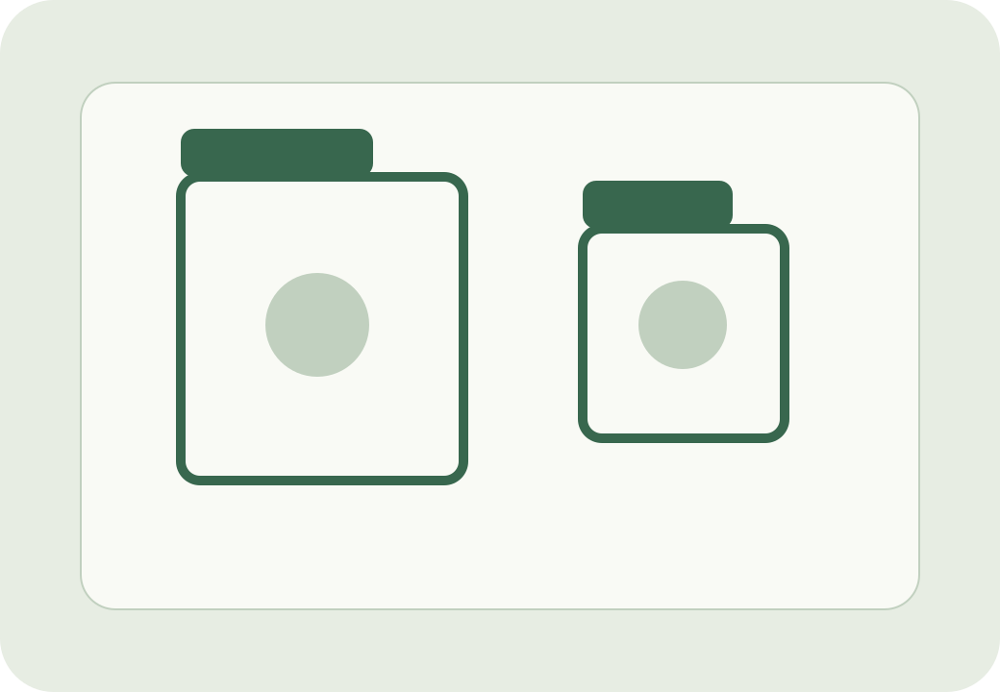
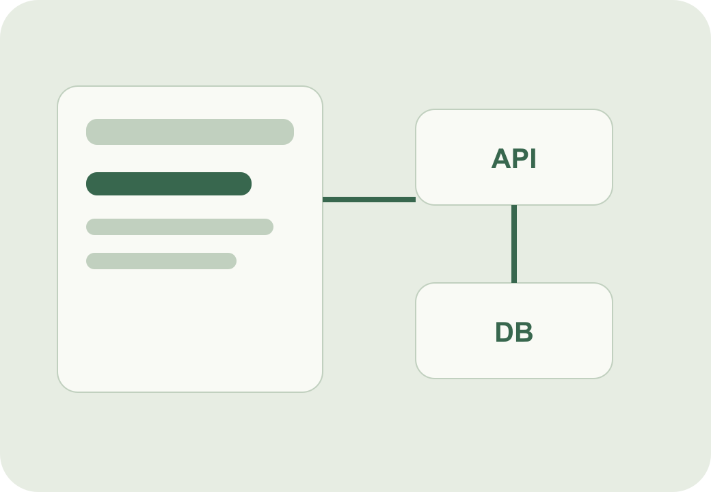
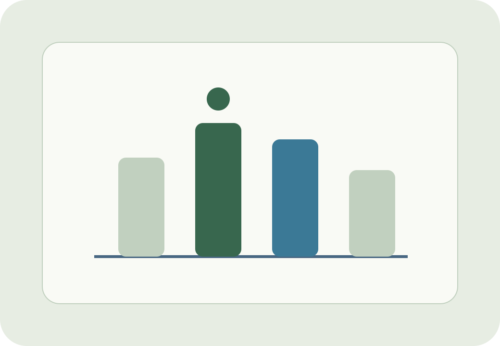
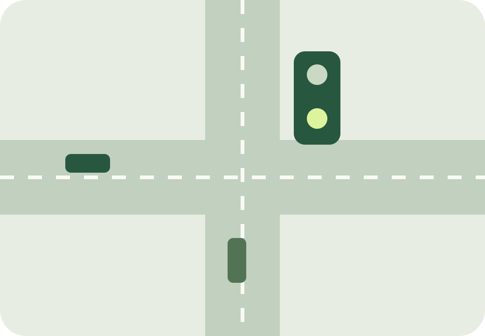
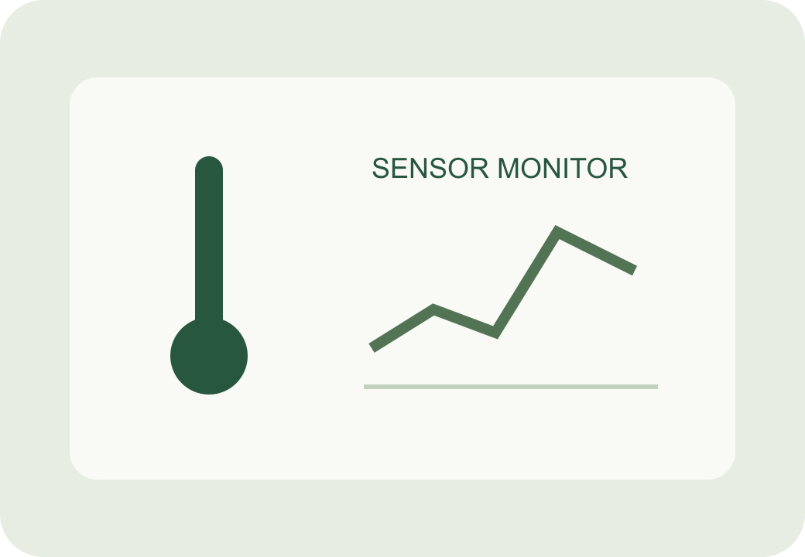

What I care about
I enjoy turning real-world inputs into understandable software experiences. My interests sit at the intersection of machine learning, connected devices, and user-facing applications.
Boston-based · MS Computer Science
I’m Lakshmana Kontemukkula, a computer science graduate student focused on creating useful, reliable systems—from real-time IoT dashboards to machine learning applications.

01 / A little context
I enjoy turning real-world inputs into understandable software experiences. My interests sit at the intersection of machine learning, connected devices, and user-facing applications.
I start with the user and data flow, build a simple working version, then improve reliability, clarity, and performance through testing and iteration.
At Northeastern, I’m strengthening my computer science foundation while exploring web development, HCI, AI, and production-minded software design.
02 / Selected work
Eight projects, three connected disciplines. Find an area that interests you and explore the thinking behind the work.
8 projects shown for all categories.

01 / PROJECTDecoded Modbus data and supported a responsive dashboard for real-time industrial monitoring.
Read case study →
02 / PROJECTExplored real-time object detection and number-plate recognition on an edge device.
Read case study →
03 / PROJECTBuilt a CRUD application with an Express API, MySQL persistence, authentication, and a responsive interface.
Read case study →
04 / PROJECTCompared CNN and transfer-learning models and evaluated whether an ensemble improved classification.
Read case study →
05 / PROJECTCompared six control policies in a two-author reinforcement-learning project, using a shared simulation and evaluation harness.
Read case study →Connected water-level, usage, and quality sensing with automated control and a mobile monitoring interface.
Read case study →
07 / PROJECTMonitored temperature and humidity with mobile alerts when food-storage conditions crossed configured thresholds.
Read case study →Developed an NLP-based recommender over 300+ documents with a six-member cross-functional team at Tech Mahindra.
Read case study →03 / Notes from the process
Cycle through short lessons I took away from different projects.
Field notes 01 / 04
Industrial IoT work taught me how protocol decoding, data validation, and interface design connect in one system.
04 / Experience
From connected devices to user-facing applications, each internship added another perspective.
Jan – Jul 2025 · Hyderabad
Project Intern
Built a real-time monitoring dashboard with Python, Flask, and MongoDB, decoding 10,000+ sensor packets daily. Developed an NLP-based project recommender over 300+ documents with a six-member team.
Jun – Jul 2024 · Hyderabad
SDE Intern
Contributed to software development using Python and Git. Refined features through user feedback, code reviews, and debugging alongside the development team.
Jun – Jul 2022 · Hyderabad
Web Developer Intern
Developed responsive web applications with JavaScript, React, and HTML/CSS. Collaborated on requirements and performance testing to improve responsiveness.
05 / Foundations & toolkit
Sep 2025 – May 2027 · Expected
Khoury College of Computer Sciences
Master of Science in Computer Science
GPA: 3.665
Sep 2021 – Jul 2025
B.Tech in Computer Science and Engineering
Specialization in Internet of Things
GPA: 8.22
Certification: GCCF Certified · View credential
06 / Get in touch
Interested in my work or exploring a collaboration? Get in touch.
The experimental corner · AI-assisted